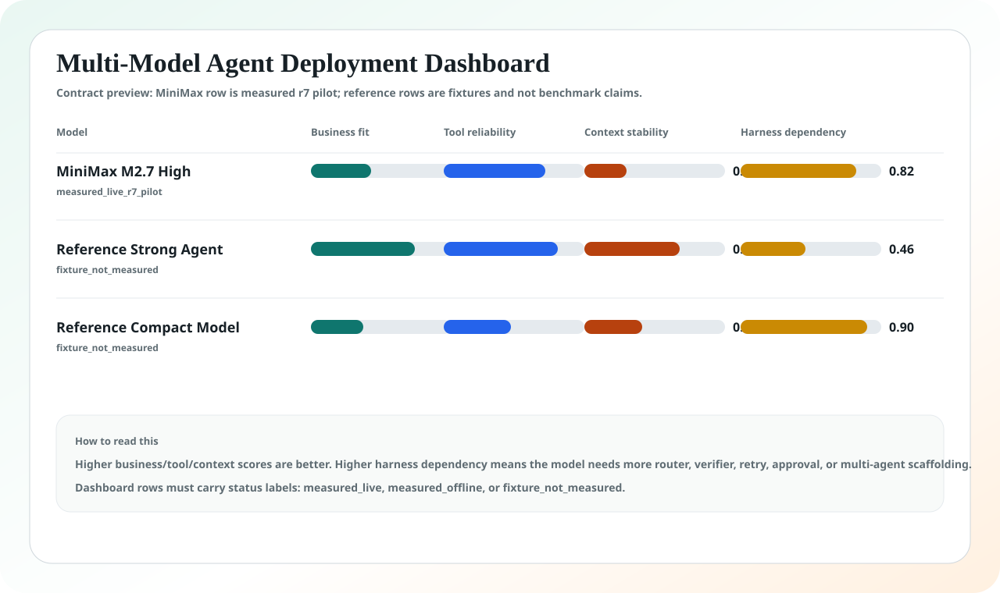
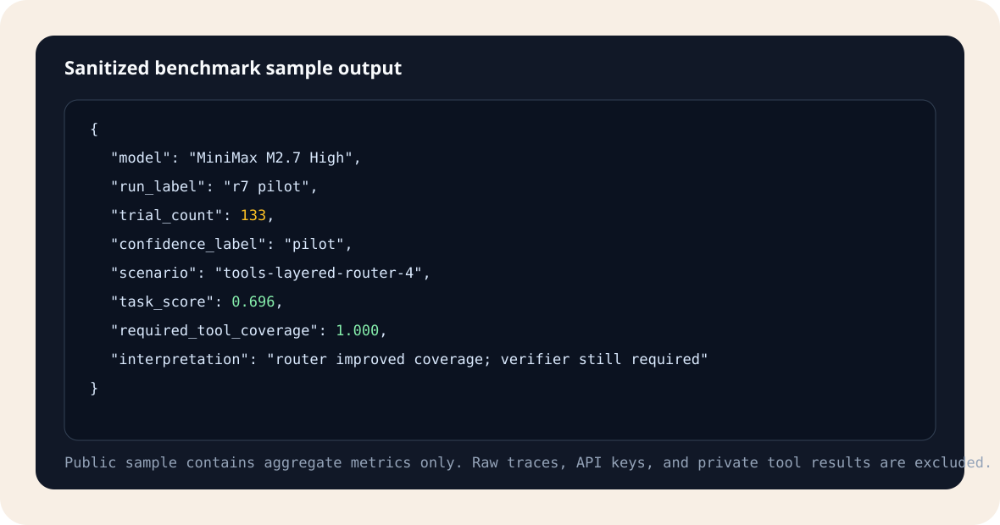

Multi-model dashboard
Agent Peak Bench compares models by deployment decisions: business fit, tool reliability, context stability, schema reliability, and harness dependency.
Current public data includes MiniMax M2.7 High r7 measured pilot output. Other rows in the sample contract are fixtures and are explicitly marked as not measured.
Measured model1
Fixture rows2
Sample trials133
StatusPilot

Benchmark output sample
The public sample shows aggregate measured output shape without raw traces, API keys, or private tool results.

Readiness labels
| Label | Meaning |
|---|---|
| assistant_only | Useful for drafting or advisory flows; no autonomous side effects. |
| human_in_loop | Can prepare decisions, but approval is required. |
| guarded_autonomy | Can execute low-risk steps with verifier, router, and audit controls. |
| not_ready | Failure clusters are too broad or unstable for the target workflow. |